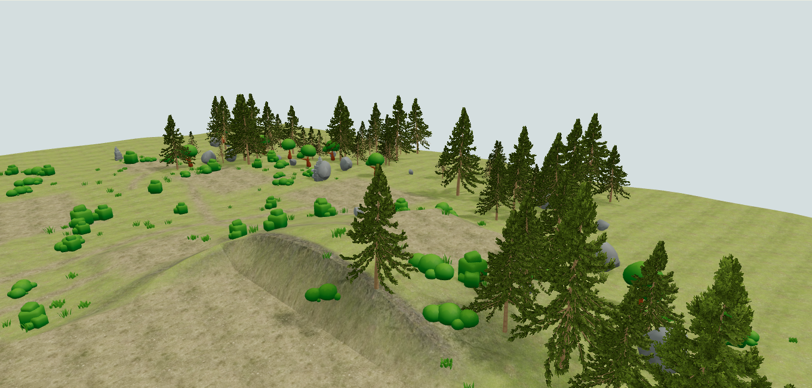
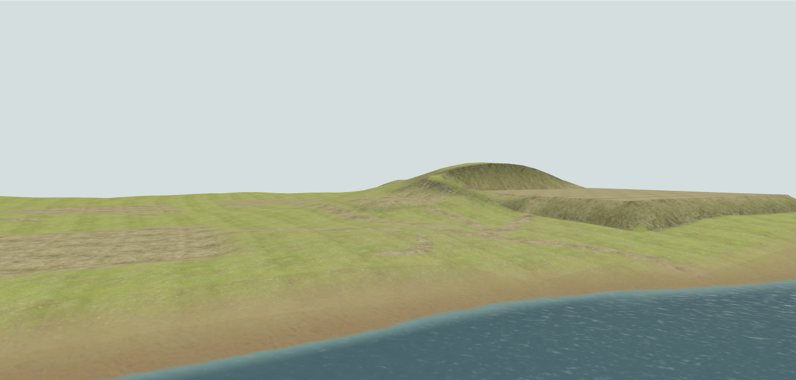
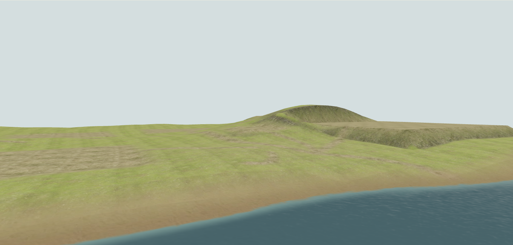

Fjordside integration v0.2
Reference and Generated with the same ten resident identities. This is a staged integration review. Reference remains the default; Northstar visual approval is pending.
Report and limitations · Raw frame intervals and fixtures · Source/build hashes · Open development controls
Village and Shore use the same offsets relative to each settlement. High overlook has the same absolute camera. Native production lighting is unchanged. Resident walking positions and elapsed phase vary slightly across reloads; exact fixtures are recorded. Greens remain too vivid in places, and actual house/tree water reflections are absent.
Visible effects — two-second pairs
These are isolated Environment Lab views. Each pair is two seconds apart. Both paused pairs have zero channel change. Measured image differences. Source wind moves leaves; roots and branches remain fixed. No isolated FPS gain is claimed.


Baseline images before the visibility pass
